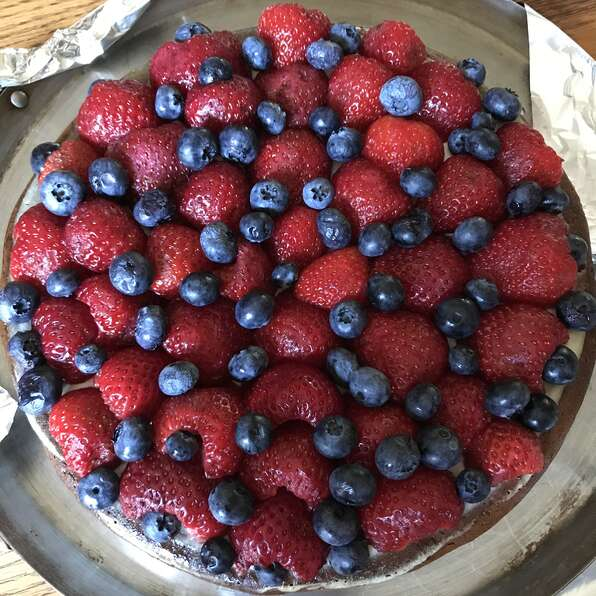

Cheesecake with Fruit

Description
A simple cream cheese pie baked in a graham cracker crust and topped wtih scucculent strawberries and blueberries.
Ingredients
- 1 (9 inch) graham cracker crust
- 1 (8 ounce) package cream cheese
- 1 cup white sugar
- 1/2 cup confectioners' sugar
- 1 cup sour cream
- 1/4 cup milk
- 2 teaspoons vanilla extract
- 3 eggs
- 1 cup sour cream
- 1/4 cup confectioners' sugar
- 1 teaspoon vanilla extract
- 1 1/2 cups fresh strawberries, halved
- 1 cup fresh blueberries
- 1 cup strawberry glaze
Directions
- Preheat oven to 350 degrees F
- In a large bowl, beat the cream cheese, white sugar and 1/2 cup confectioners sugar until smooth.
Beat in 1 cup sour cream, milk, and 1 teaspoon vanilla. Slowly beat in eggs, one at a time. Pour
filling into crust.
- Bake in preheated oven for 25 minutes, or until filling is set. Cool for 20 minutes. Preheat
oven to 425 degrees F.
- In a small bowl, combine 1 cup sour cream, 1/4 cup confectioners sugar, and 1 teaspoon vanilla.
Mix until smooth, then spread over cheesecake. Bake in preheated oven for 5 minutes. Allow to
cool, then refrigerate for at least 1 hour.
- Arrange strawberries and blueberries on top of the cheesecake. Spoon strawberry glaze over
berries. Refrigerate several hours before serving.